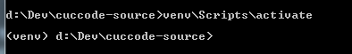

Nếu bạn đang sử dụng Jupyter Notebooks và muốn chạy trong môi trường Virtual Environment có sẵn thì đây chính là bài viết dành cho bạn.
Tại sao bạn lại cần Virtual Environment khi lập trình Python, có thể kể đến 3 lý do chính như sau:
-
Cho phép bạn làm việc trong một môi trường ảo mà không bị ảnh hưởng bởi những thư viện phần mềm, gói cài đặt mà bạn đã cài trên toàn hệ thống.
-
Cho phép bạn tùy biến việc sử dụng các thư viện cần thiết theo đúng phiên bản mà bạn muốn cho từng project, bạn có thể cùng lúc chạy 2 project với phiên bản Django khác nhau mà không làm ảnh hưởng lẫn nhau. Hãy thử nghĩ đến cảnh việc bạn đang chạy một dự án sử dụng Django 2.0 và phải bảo trì cho 1 dự án chạy Django 1.8 sẽ thấy Virtual Environment lợi hại như thế nào.
-
Chắc hẳn bạn đã nhiều lần gặp trường hợp code chạy trên máy mình nhưng không chạy được trên máy khách, hì hục kiểm tra thì phát hiện ra môi trường chạy khác nhau, phiên bản thư viện khác nhau ... Nếu bạn sử dụng Virtual Environment cho dự án ngay từ đầu thì có lẽ mọi việc đã đơn giản hơn rồi.
Cài đặt Virtual Environment để chạy với Jupyter Notebooks
Tạo môi trường:
python -m venv projectnamevenv
Trong đó projectnamevenv là tên folder chứa thông tin Virtual Environment cho dự án của bạn, bạn có thể đổi tên cho phù hợp hơn như /venv /virenv để dễ gợi nhớ hơn.
Activate môi trường này lên (Windows):
\projectnamevenv\Scripts\activate
Bây giờ bạn sẽ thấy ở đầu dòng lệnh có thêm (venv), điều đó có nghĩa là môi trường của bạn đã được kích hoạt.

Tiếp theo chúng ta sẽ cài đặt thư viện ipykernel
pip install ipykernel
Tạo kernel mới cho Jupyter Notebooks:
ipython kernel install --user --name=projectname
Tới thời điểm này, bạn đã có thể khởi chạy Jupyter Notebooks của bạn và chọn Kernel tương ứng với Virtual Environment bạn đã tạo sẵn.
Tóm lược:
Môi trường Windows
> python -m venv venv
> venv\Scripts\activate
(venv) > pip install ipykernel
(venv) > ipython kernel install --user --name=projectname
Môi trường Linux
$ python -m venv venv
$ source venv/bin/activate
(venv) $ pip install ipykernel
(venv) $ ipython kernel install --user --name=projectname